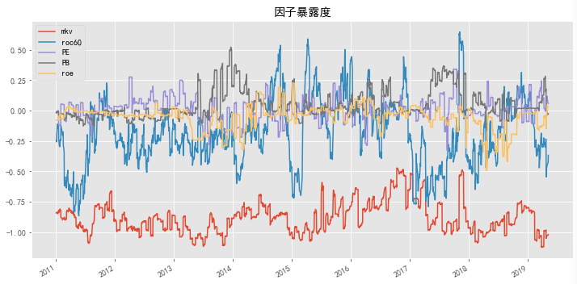

风格暴露分析
可自行配置风格因子，这里仅以市值、反转等因子作为风格因子示例函数用法
class style_analysis(object):
def __init__(self,styles = ['mkv','roc60','PE','PB','roe']):
self.styles = styles
def update_style(self):
ss = {}
for i in self.styles:
print(i)
ss[i] = read_hdf5_base(i)
if i == 'mkv':
ss[i] = ss[i].applymap(lambda x:math.log(x,math.e))
ss[i] = median_clean(ss[i])
self.ss = ss
def cal_style_exposure(self,holdings):
s = {}
for i in sorted(holdings[0].keys()):
h = holdings[0][i]
style = [self.ss[n][i] for n in self.styles]
style = pd.DataFrame(style,index = self.styles).T
s[i] = style[style.index.isin(h)].mean()
return pd.DataFrame(s)
#加载风格因子数据，需要进行标准化，建议预储存标准化因子数据
sp = mf.style_analysis()
sp.update_style()
ILLIQ = mf.read_hdf5_base('ILLIQ')
r = mf.run(ILLIQ,period=10,fees=0.002,positions=100)
exposure = sp.cal_style_exposure(r[1])

收益归因
...